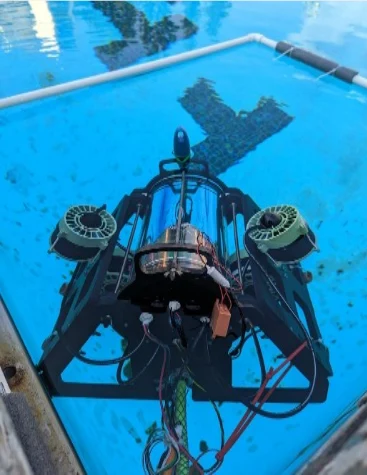

Hydra: Underwater ROV
Designing, machining, and testing an underwater machine

How it Works
Hydra is a remotely operated underwater vehicle (ROV) developed for the MATE ROV World Championship. Controlled from the surface, Hydra uses six underwater thrusters for precise maneuverability and dual cameras for real-time navigation. A servo-actuated mechanical claw allows the operator to grasp and transport objects, while its lightweight HDPE frame, adjustable ballast system, and waterproof electronics enclosure support reliable underwater operation.
The ROV underwent iterative prototyping and underwater testing to optimize its mechanical performance. Notable improvements included redesigned thruster guards to prevent propeller obstructions and refinements to the claw's geometry for improved object manipulation.

Components
Frame, propulsion, and manipulator
Hydra’s CNC-machined HDPE frame carries six T200 thrusters, a waterproof electronics canister, two cameras, and a servo-driven manipulator. The team checked seals, tested the gripper, and revised thruster guards after finding interference. These integration details mattered whenever a change to one component affected clearance or access to another.
My Contributions
Mechanical Design & Fabrication
- Contributed to the design, CNC machining, and assembly of the ROV's mechanical systems.
- Developed a rounded TPU claw design to improve object handling, camera visibility, and cable safety.
- Assisted with mechanical integration and component modifications.
Testing & Design Iteration
- Participated in underwater testing to evaluate mechanical performance and identify design issues.
- Collaborated on prototype improvements to enhance functionality and reliability.
Technical Documentation & Leadership
- Led the development and organization of the team's technical documentation for the MATE ROV World Championship.
- Documented engineering decisions, fabrication processes, testing procedures, and design improvements.
- Coordinated technical information across mechanical, electrical, and software teams.